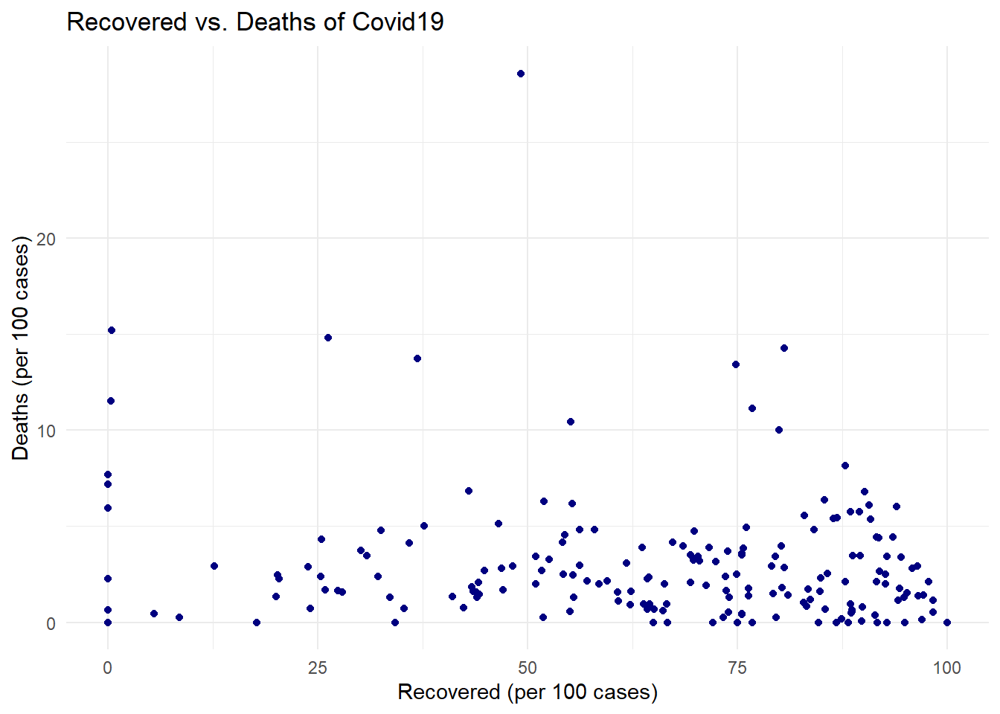
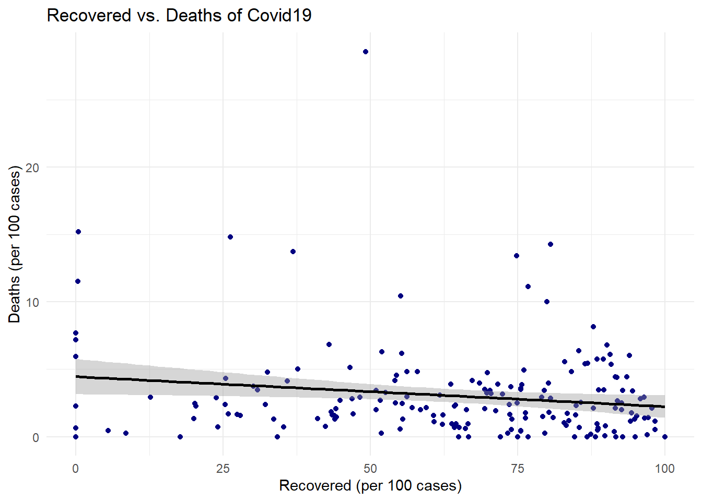
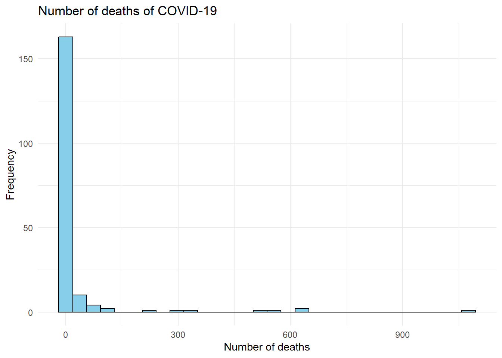
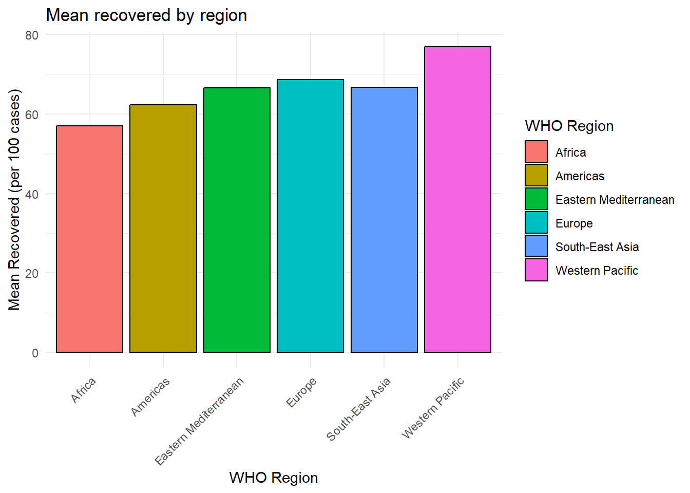
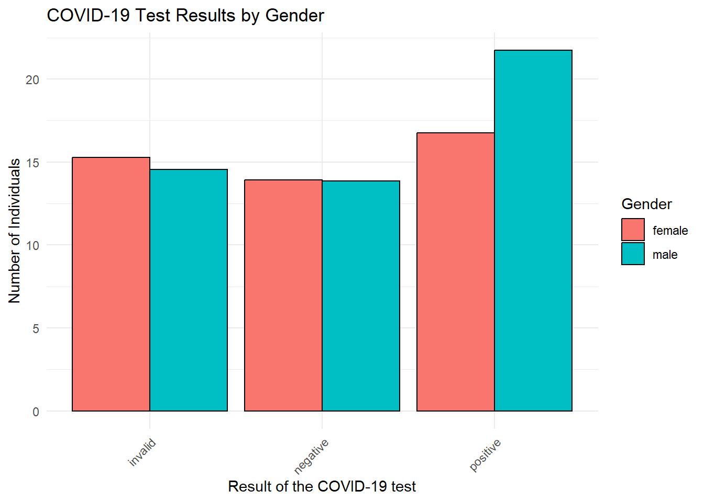

Chapter 4 Data Visualization with ggplot
4.1 Introduction to ggplot2
4.1.1 Overview
The ggplot2 package is one of the most powerful and flexible tools for creating complex, multi-layered graphics in R. It implements the Grammar of Graphics, a framework that breaks down plots into semantic components such as layers, scales, and themes.
4.1.2 Basic Concepts
- Aesthetic Mappings (
aes()): Defines how data variables are mapped to visual properties like color, size, and shape. - Geometries (
geom_*): Defines the type of plot, such as points (geom_point), lines (geom_line), and bars (geom_bar). - Layers: Multiple geometries can be added to a plot.
- Scales and Coordinate Systems: Allows control over appearance.
- Themes: Adjust non-data elements like background and grid lines.
4.1.3 Scatter Plot
4.1.3.1 Basic Scatter Plot
# Load libraries
library(dplyr)
library(ggplot2)
library(readr)
# Load the COVID-19 dataset
covid_data <- read_csv("country_wise_latest.csv")## Rows: 187 Columns: 15
## ── Column specification ────────────────────────────────────────────────────────
## Delimiter: ","
## chr (2): Country/Region, WHO Region
## dbl (13): Confirmed, Deaths, Recovered, Active, New cases, New deaths, New r...
##
## ℹ Use `spec()` to retrieve the full column specification for this data.
## ℹ Specify the column types or set `show_col_types = FALSE` to quiet this message.#View(covid_data)
# Create the scatter plot
ggplot(covid_data, # The data frame containing the COVID-19 data
aes(x = `Recovered / 100 Cases`, # Variable for the x-axis (Recovered cases per 100)
y = `Deaths / 100 Cases`)) + # Variable for the y-axis (Deaths per 100 cases)
geom_point(color = 'navy') + # Add points to the plot, colored navy
labs(title = "Recovered vs. Deaths of Covid19", # Set the plot title
x = "Recovered (per 100 cases)", # Set the x-axis label
y = "Deaths (per 100 cases)") + # Set the y-axis label
theme_minimal() # Use a minimal theme for a cleaner look
4.1.3.2 Scatter Plots and Line Plots
# Create the scatter plot with a smooth line
ggplot(covid_data, # The data frame containing the COVID-19 data
aes(x = `Recovered / 100 Cases`, # Variable for the x-axis (Recovered cases per 100)
y = `Deaths / 100 Cases`)) + # Variable for the y-axis (Deaths per 100 cases)
geom_point(color = 'navy') + # Add points to the plot, colored navy
geom_smooth(method = "lm", # Add a smooth line, using a linear model ("lm")
color = "black", # Set the line color to black
se = TRUE) + # Display the standard error around the line
labs(title = "Recovered vs. Deaths of Covid19", # Set the plot title
x = "Recovered (per 100 cases)", # Set the x-axis label
y = "Deaths (per 100 cases)") + # Set the y-axis label
theme_minimal() # Use a minimal theme for a cleaner look## `geom_smooth()` using formula = 'y ~ x'
4.1.4 Exercise 1: Customizing Your First Plot
Objective: Create a scatter plot showing the relationship between proportion_of_active and proportion_of_recovery. Customize the plot:
- Create a new variable (using the function mutateof the package dplyr) named proportion_of_active = Active/Confirmed.
- Create a new variable (using the function mutateof the package dplyr) named proportion_of_recovery = Recovered/Confirmed.
- Change the color of the points to “darkturquoise” (see list of color names)
- Adjust the size of the points to 3.
- Use triangles for the point shapes.
- Add the regression line with the confidence interval estimate.
4.1.5 Bar Plots and Histograms
4.1.5.1 Histogram:
# Create the histogram
ggplot(covid_data, # The data frame containing the COVID-19 data
aes(x = `New deaths`)) + # Variable for the x-axis (New deaths)
geom_histogram(fill = "skyblue", # Fill the bars with skyblue
color = "black") + # Set the bar outline color to black
labs(title = "Number of deaths of COVID-19", # Set the plot title
x = "Number of deaths", # Set the x-axis label
y = "Frequency") + # Set the y-axis label
theme_minimal() # Use a minimal theme for a cleaner look## `stat_bin()` using `bins = 30`. Pick better value with `binwidth`.
4.1.5.2 Bar Plot
# Calculate mean recovery rates by region and create bar plot
covid_data %>% # Start with the COVID-19 data
group_by(`WHO Region`) %>% # Group the data by WHO Region
summarise(mean_recovery = mean(`Recovered / 100 Cases`, na.rm = TRUE)) %>% # Calculate the mean recovery rate for each region, removing NA values
ggplot(aes(y = mean_recovery, # Set the y-axis to the mean recovery rate
x = `WHO Region`, # Set the x-axis to the WHO Region
fill = `WHO Region`)) + # Fill the bars with different colors based on the region
geom_bar(stat = "identity", # Use "identity" because we've already calculated the means
color = "black") + # Set the bar outline color to black
labs(title = "Mean recovered by region", # Set the plot title
x = "WHO Region", # Set the x-axis label
y = "Mean Recovered (per 100 cases)") + # Set the y-axis label
theme_minimal() + # Use a minimal theme for a cleaner look
theme(axis.text.x = element_text(angle = 45, hjust = 1)) # Rotate x-axis labels for better readability
library(medicaldata) # For the covid_testing dataset
# Load the covid_testing dataset
testing_data <- medicaldata::covid_testing
# Analyze test results by gender and create bar plot
testing_data %>%
group_by(gender, result) %>% # Group the data by gender and test result
summarise(age_moyen = mean(age, na.rm=TRUE)) %>% # Count the number of individuals in each group
ungroup() %>% # Ungroup the data for plotting
ggplot(aes(y = age_moyen, # Set the y-axis to the mean age
x = result, # Set the x-axis to the test result
fill = gender)) + # Fill the bars with different colors based on gender
geom_bar(stat = "identity", # Use "identity" because we've already calculated the counts
color = "black", # Set the bar outline color to black
position = "dodge") + # Place bars for different genders side-by-side
labs(title = "COVID-19 Test Results by Gender", # Set the plot title
x = "Result of the COVID-19 test", # Set the x-axis label
y = "Number of Individuals", # Set the y-axis label
fill = "Gender") + # Set the legend title
theme_minimal() + # Use a minimal theme for a cleaner look
theme(axis.text.x = element_text(angle = 45, hjust = 1)) # Rotate x-axis labels for better readability## `summarise()` has grouped output by 'gender'. You can override using the
## `.groups` argument.
4.1.6 Exercise 3: Creating Histograms and Bar Plots
- Import the blood_storage database from the package.
- Log-transform the variable age in the data and save the result as age.log in the dataframe.
- Compare the histograms of the age and age.log variables and comment on the distribution.
- Create a bar plot of the mean PVol by aggregating by race (use the AA variable).
- Create a bar plot of the mean PVol by aggregating by the volume of the tumor (use the **TVol} variable).